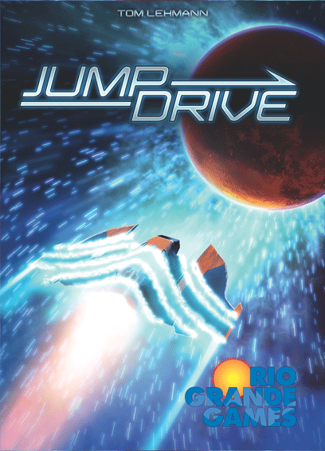
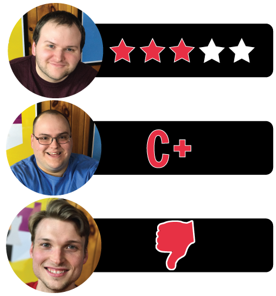

This week Board Crazy reviews Jump Drive, the card game designed by Tom Lehmann and published by Rio Grande Games. Jump Drive is a fast-paced card game for 2-4 players. The players use a combination of military might, exploration, colonization, and alien technologies to conquer the galaxy. See our reviews below!

D reviews Jump Drive
 (Author’s
note: this review is meant to accompany our gameplay video and will not
go in-depth on the game’s rules. If you’re interested in learning how
the game is played, please watch the video. It’s not bad.)
(Author’s
note: this review is meant to accompany our gameplay video and will not
go in-depth on the game’s rules. If you’re interested in learning how
the game is played, please watch the video. It’s not bad.)
Playing board games is a lot like playing sports, in my estimation. Not actually the act of playing them, of course (they tend to require different sets of skills), but rather in regards to some peripheral characteristics. Playing a board game or a sport is distinct from enjoying another form of leisure, like a film, a book, or some music. They both tend to come with some similar pre-requisites for enjoyment that can, unfortunately, make being a fan of either activity a bit of a hassle. First of all, there are the rules. You can understand and enjoy a movie without knowing how to make one, but you can’t properly play a board game or a sport without first familiarizing yourself with its mechanics. Also, while many games and sports can be played individually, most of them are designed for groups of people and, accordingly, best experienced that way. And then there’s time. In my experience, simply finding the time to play a board game or a sport is one of the biggest challenges a fan has to overcome.
Survey Team – each player gets one survey team per game.
That last one is a big one. I’ll gladly learn how to play a game, and I have a number of friends and family members who also enjoy board games, but finding a couple of hours (or more) to actually get together play one is often the biggest barrier. This leads me to Tom Lehmann’s Jump Drive, a card game that lives up to its name. For all its flaws – of which there are a few – you can’t say that this game ever wears out its welcome; it really is properly quick. Based on that fact alone, I suspect this one might find itself on our group’s tables more often than some other games that we might prefer to play. And I don’t mean to diminish it too much when I say that, as there is definitely fun to be had with Jump Drive.
Galactic Trendsetters – this is a very powerful card. You collect 2 VP per turn per Galactic Trendsetters.
In addition to its brief playtime (legitimately less than 30 minutes with experienced players), Jump Drive also boasts a high amount of replayability. This is largely thanks to the surprisingly numerous amount of options players have when it comes to acquiring victory points. Combining military strength, explore icons, chromosomes, or planet colors are just some of the ways to quickly acquire vast quantities of points. I think the game also does well incorporating its theme, if you take the time to pay attention. You’re supposed to be building up a galactic empire, and after a couple of rounds some characteristics of each player’s empire should start to become apparent. Someone will likely be military-focused, while others build more around exploration or science. It’s not much, but it’s enough to justify the sci-fi themes. On a related note, the art on the cards isn’t what I’d call great, but I think the somewhat pulpy style is pretty much a perfect fit for the game.
There are some flaws, though, as I mentioned earlier. I would perhaps levy my biggest complaint against the rulebook, rather than anything mechanical. It is, in a word, confusing. Now I may not be a genius, but I’m generally capable of comprehending a rulebook written in the English language. The Jump Drive rulebook gives a lot of space to explaining the quirks of specific cards and giving names to certain symbols you will encounter, but it eschews explaining these symbols, the components, and the scoring system in what I would describe as a coherent manner. There are some diagrams provided, which help, but it took me longer than I think should have been necessary to understand how to play this game.
Concerning the actual gameplay, I would say Jump Drive’s biggest problem is its high degree of randomness. If you get dealt a bad hand of cards at any point, you’re in danger of falling behind, which is pretty much a death knell in this game. Catching up isn’t impossible, but given the game’s brevity, it’s pretty damn hard. Of course, this brevity also means you won’t have to wait long before you can just start a new game and hope for better luck. So yeah, Jump Drive is far from being perfect, but it’s a solid filler game that I’d recommend to you if you and your friends are really pressed for time.
D’s Rating: Three Stars out of Five.
Will reviews Jump Drive
 Sometimes
I come across a game that’s fun while simultaneously being
unremarkable. It’s a weird sensation – I know that I appreciate the
experience, but at the same time, I know it’s objectively mediocre.
That’s how I feel about Jump Drive, a card game created by experienced
designer Thomas Lehmann. In the moment, it was entertaining and quick,
which I liked at the time. Looking back on it though, I feel very little
for Jump Drive, one way or the other.
Sometimes
I come across a game that’s fun while simultaneously being
unremarkable. It’s a weird sensation – I know that I appreciate the
experience, but at the same time, I know it’s objectively mediocre.
That’s how I feel about Jump Drive, a card game created by experienced
designer Thomas Lehmann. In the moment, it was entertaining and quick,
which I liked at the time. Looking back on it though, I feel very little
for Jump Drive, one way or the other.
First off, Jump Drive should be simpler than it is, or at least, it should be easier to grasp than it is. To be honest, Jump Drive isn’t that difficult a card game; it’s actually pretty straightforward once you decipher the rule sheet. There’s a reason I emphasize “once” – the rule sheet is moderately incoherent. I wouldn’t go as far to call it impenetrable, but of all the tabletop games we’ve filmed at Board Crazy, it’s the worst by far. I found myself going to Board Game Geek more than once for rule clarifications, and I’m not even our game master. Then again, I’m not very good at memorizing or even comprehending rules, but the fact that all three members of our group had issues is revealing.
Anyhow, once you figure out how Jump Drive plays, it’s actually quite breezy and enjoyable. The main goal of the game is to accumulate 50 victory points before your opponents do, and you do so by buying cards that have a variety of values. Interestingly, the cards themselves are the currency – every card has a value of one, and the numbers in the top corner determine their price. To put it simply, if you want to buy a space station worth six, then you’ll need to pay (discard) six other cards in your hand. There’s actually a lot more going on in Jump Drive, but those are the basics. Once I got the hang of it, I found myself really digging the basics of this game. They’re just different enough, and I found myself admiring the balance of the gameplay. Again, Jump Drive is rather enjoyable in the moment.
The Exploration Token – Draw cards equal to explore icons in your empire plus the the icons on the tile (5 icons on the tile + X number in your empire). Discard the total cards taken minus two.
Having explained the basics, I need to stress that the complexities of the game are where it loses me. For example, the Explore Token is an added element that really helps players who draw a crappy hand. Essentially, the token allows you to draw five cards plus an additional amount equal to the number of explore icons that appear on cards you’ve already purchased. Then you have to discard five cards from your hand, leaving you with two more than you initially had. That two sentence explanation is entirely more concise than the one given in the rules or portrayed on the token itself. I repeat, the rule sheet is pretty substandard. Being poorly explained is not my only issue with the Explore Token – I also don’t enjoy the amount of downtime it adds to an otherwise quick game. A session of Jump Drive is only supposed to last about 20-25 minutes, but two or three Explore Tokens could easily extend that time by 10-15 minutes. I don’t know exactly how to fix this. I suppose you could house rule a time limit, but that’s not fair to someone who draws 10+ cards and has to analyze their abilities on the fly. Maybe the solution is to draw less than the required five, but I imagine playtesting revealed that to be an impossibility.
Alien Robot Sentry – It costs 4 military might to play. You get 2 VP per turn and 1 card per turn. It also has an explore icon and +1 to your military might.
With all that said, I should reiterate – the rule sheet of Jump Drive ruins a lot of the game’s appeal. As I was writing this review, I realized that a lot of the apathy I feel toward it stems from the frustration I felt when learning its intricacies. That’s not to say I think Jump Drive is bad; it actually does quite a bit well. In the moment, the brief and balanced gameplay is fun without being too weighty. And I didn’t mention it before, but the artwork is rather solid, if not also a bit unexceptional. At the end of the day, I guess that’s how I would describe the entire experience – solid but unexceptional. It’s disappointing because with a better rulebook and a few tweaks, I might have held Jump Drive in much higher regard.
I give it a: C+
Graham reviews Jump Drive
 I
have fun with almost all of the board games I play. Usually, once I
learn how the game is played, my competitive nature comes out and I try
my hardest to win. However, just because you had fun in the moment
doesn’t necessarily mean it’s a good game. I’m sure if I tried a little
harder, I could turn that into a life lesson somehow… Anyway, that’s
where I’m at with Jump Drive. During the game, I was trying my hardest
and having fun, but afterwards, I realized I didn’t really care that
much. I think there are a few reasons for this.
I
have fun with almost all of the board games I play. Usually, once I
learn how the game is played, my competitive nature comes out and I try
my hardest to win. However, just because you had fun in the moment
doesn’t necessarily mean it’s a good game. I’m sure if I tried a little
harder, I could turn that into a life lesson somehow… Anyway, that’s
where I’m at with Jump Drive. During the game, I was trying my hardest
and having fun, but afterwards, I realized I didn’t really care that
much. I think there are a few reasons for this.
The Game Summary Card
First, I’ll start with the rulebook. I have said before in a few of my other board game reviews that there is absolutely no excuse for a poorly written rulebook. Zero. Going through the rulebook was a greater thought exercise than the game itself. It honestly felt like they released the first draft of the rulebook and never tried to have anyone unfamiliar with game read through it. There is no way the three of us are the only ones that struggled with this either.
Another thing that really bothered me about the game is the lack of interaction between players. I had the same issue with Roll Player, but Roll Player at least has a ton of fun and unique mechanics that make up for that. Roll Player also has a single player option. I have no idea why they list this as a game for 2-4 players when the only connection you have between you and your opponents is the race to 50 VP and some cards that scale based on your opponents’ cards. The designers could have easily added a solitaire version. For example, 50 points in 5 rounds or 10 rounds or whatever – it’s just such an easy add-on and makes complete sense. Also, they missed such a good opportunity to add cards that could affect your opponents’ empires. It’s so obvious, and I just can’t understand why they didn’t add that mechanic into the game.
Honestly, there are few other things that frustrated me about Jump Drive that I don’t want to go into detail on, so I will mention them briefly. Luck doesn’t typically bother me in board games because I believe it’s necessary to add some uncertainty into games, but since Jump Drive plays so quickly and your points accumulate every turn, your initial draw is really important. If you get a bad initial draw, it’s that much harder to win. As I just mentioned, the game plays really quickly, which is nice. However, there is a lot of down time within those short rounds. Sometimes your opponents might be going through 10+ cards and have to decide which 10 to keep. It really slows things down in a game that’s supposed to be very fast paced. Finally, there is just not a lot of depth and replayibility to the game. Once you learn what the cards are, it gets boring pretty quickly. The main driver of its replayibility is that it’s a short game, though that’s never going to be a good enough reason to keep playing the game, or any game really.
Even though there are fun moments within Jump Drive, there’s just not enough there for this to be a top-tier card game. There are too many flaws and missed opportunities. I would love to see an expansion come out that adds more interaction among opponents, removes some of the down time, and fixes the rulebook. With those additions/alterations, I think it does have potential to be a really fun, fast-paced card game. For now though, I have to give Jump Drive One Thumb Down.

Leave a Reply
You must be logged in to post a comment.